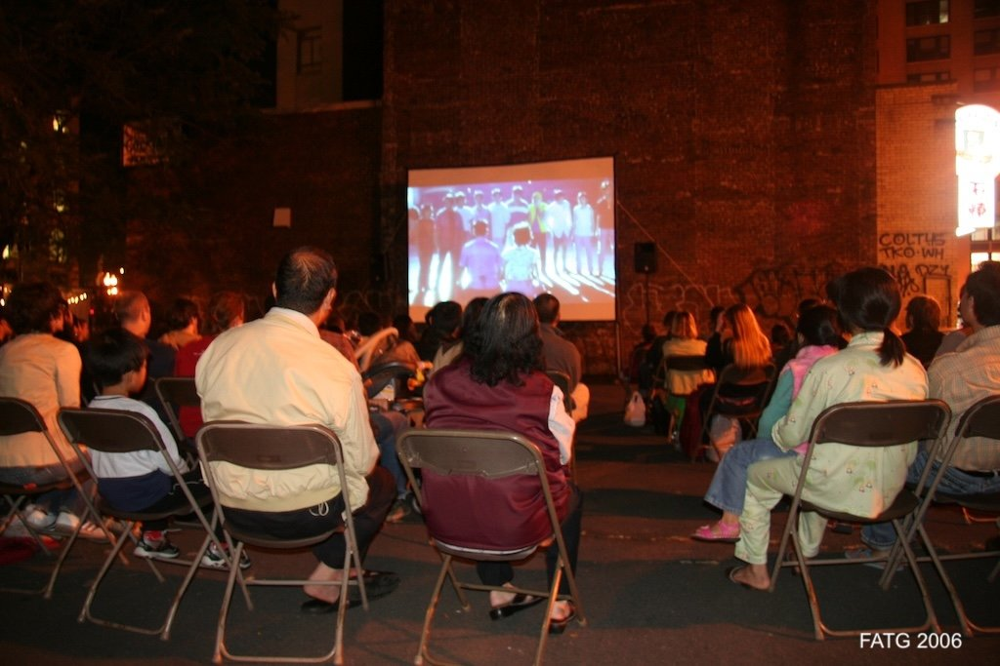
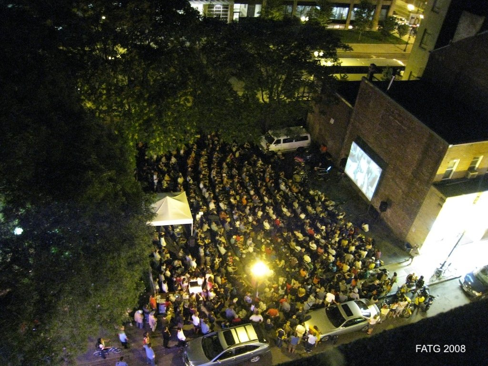
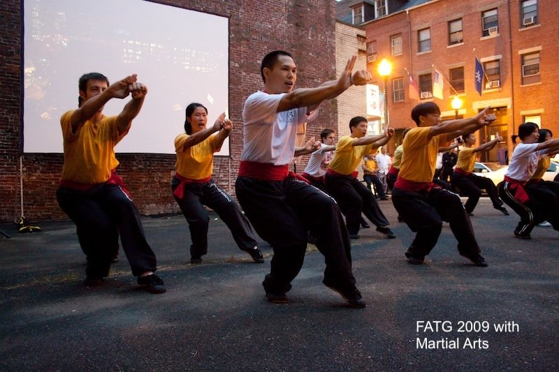
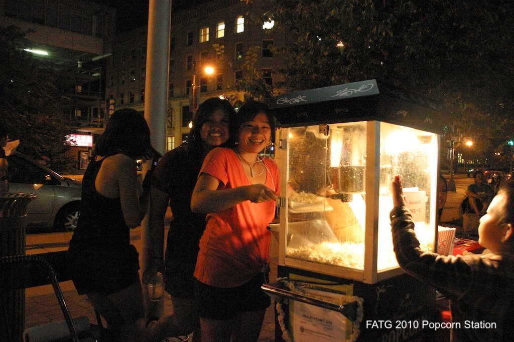
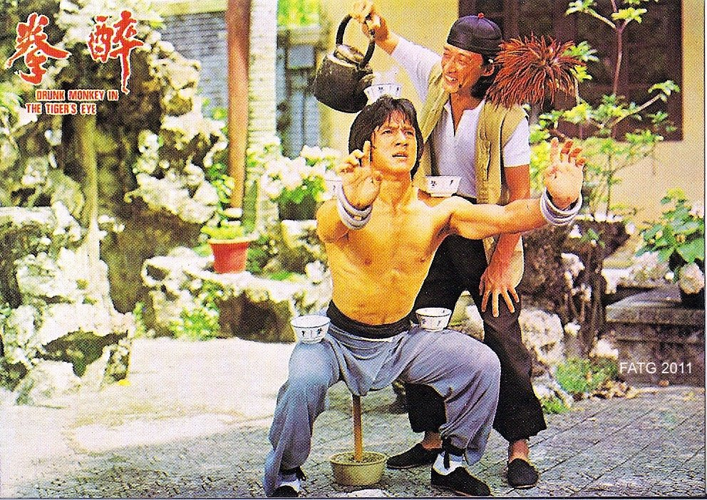
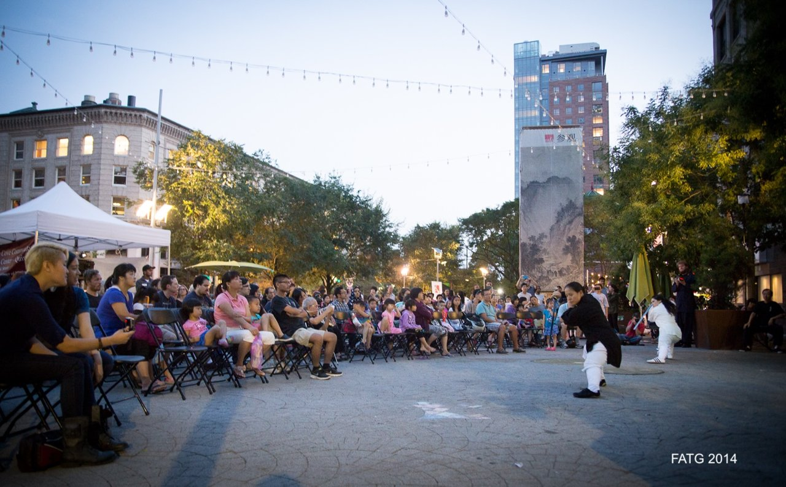
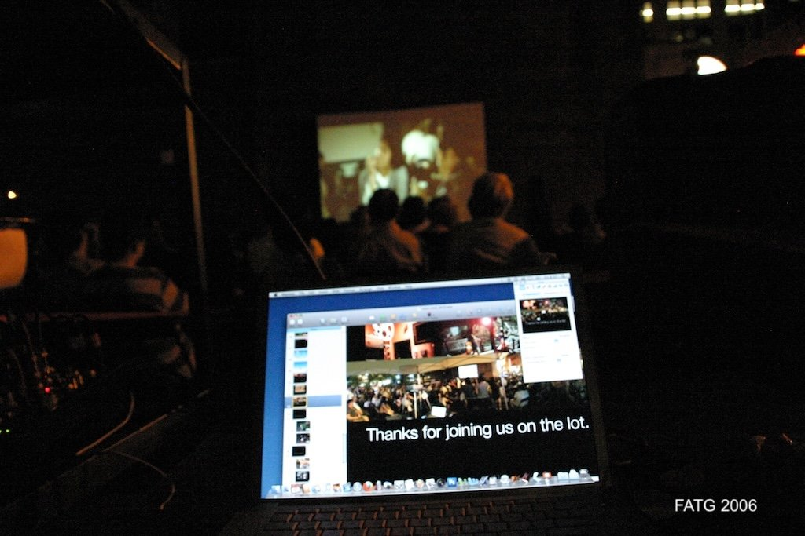

Try camera again







Are you at Chinatown Gate park?
Yes
Stand near the PlayCubes
Face the red brick wall
Yes
Sound on
Back
Next
 Stand near the PlayCubes
Stand near the PlayCubes Face the red brick wall
Face the red brick wall